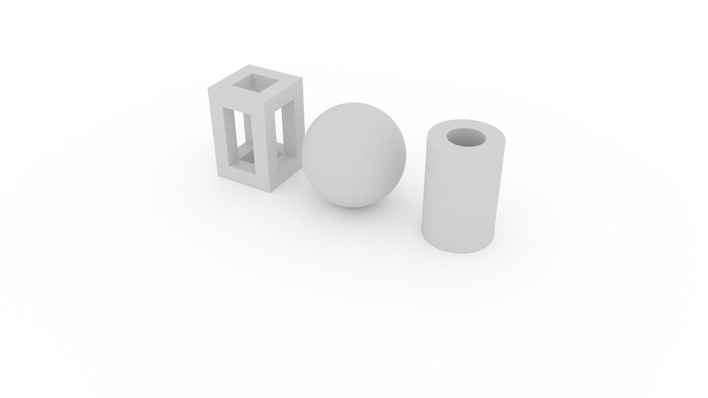
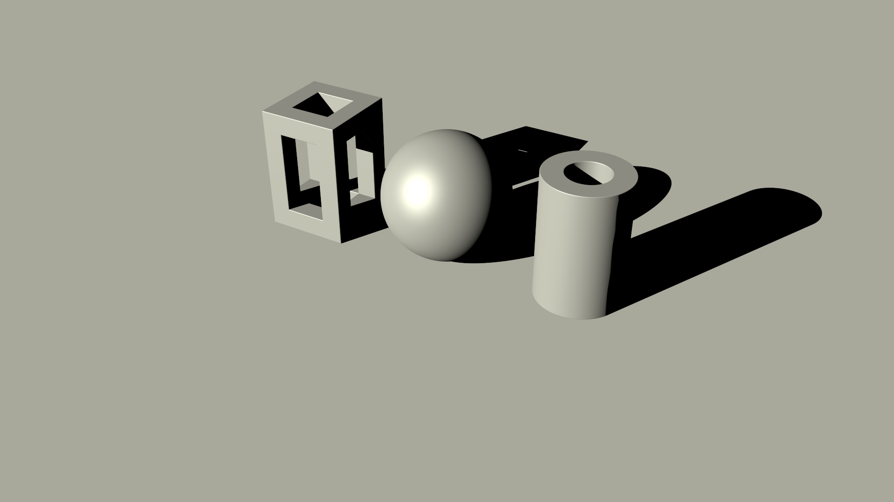
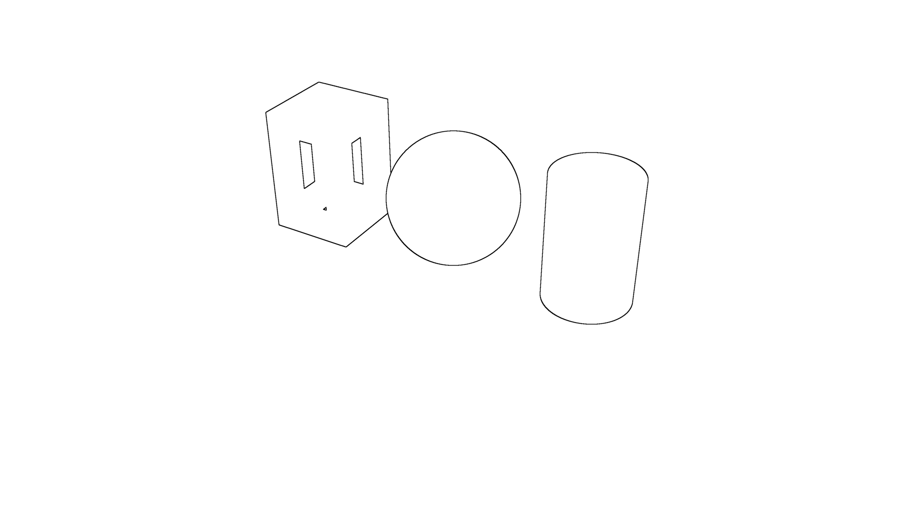
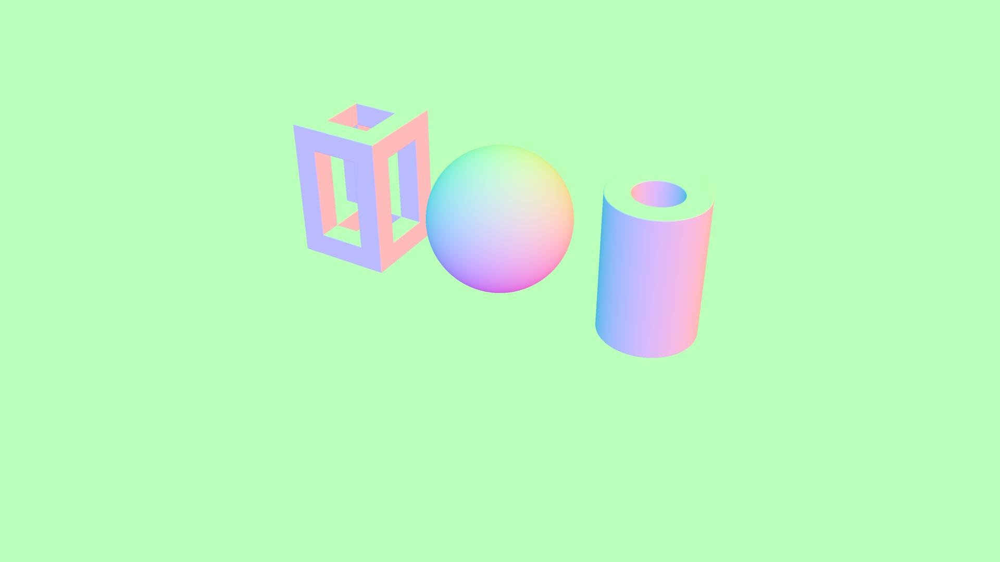
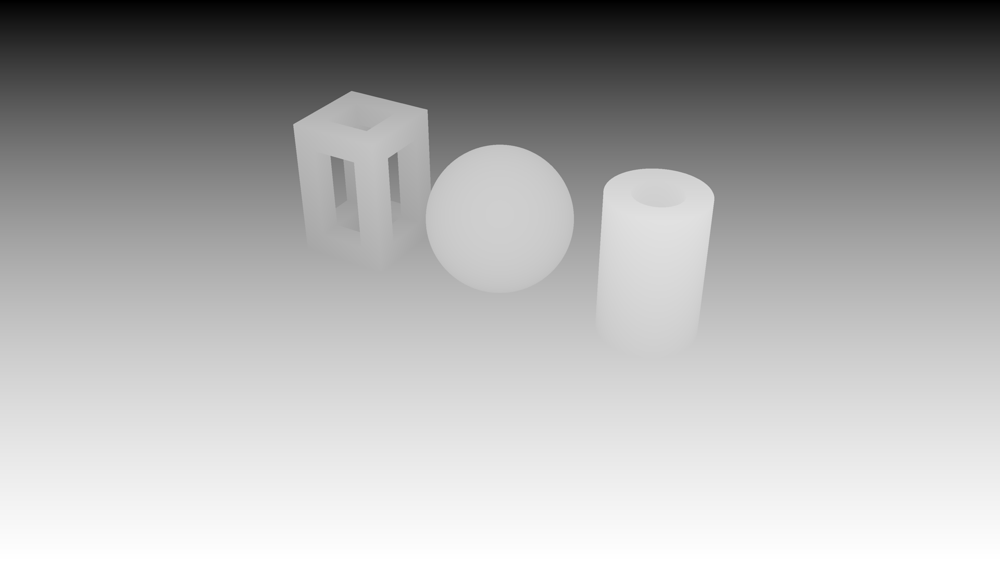
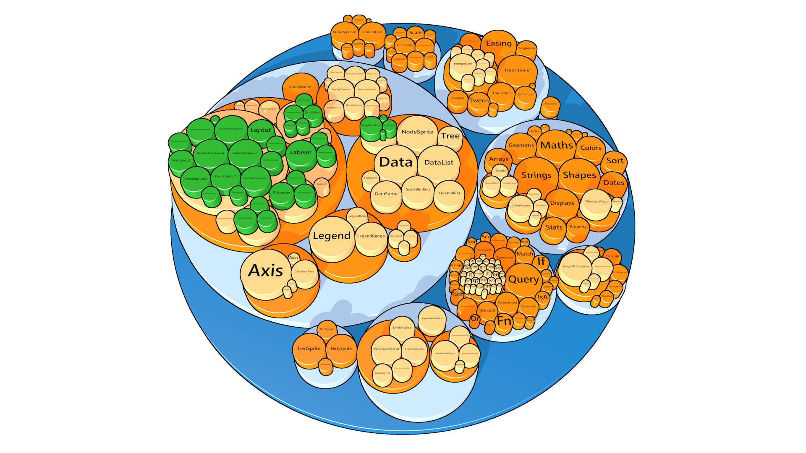

MorphCharts supports multiple render modes.
The renderMode is set on the renderer and determines how the scene is drawn.
| Mode | Description |
|---|---|
raytrace |
Path-traced rendering with global illumination, materials, reflections, refractions, and soft shadows. Progressively accumulates samples for high-quality output. The default mode. |
color |
Direct lighting only. Faster than raytrace. |
edge |
Renders edges detected from the segment buffer, producing an outline view. |
normal |
Visualizes surface normals as RGB colors. |
depth |
Visualizes depth from the camera as a grayscale image. Closer surfaces appear lighter, distant surfaces appear darker. |
segment |
Renders each mark with a unique flat color based on its segment ID. |
The default render mode. Rays are cast from the camera through each pixel into the scene, bouncing off surfaces according to their material properties. Each frame adds one sample per pixel, progressively refining the image over time. This produces photorealistic results including soft shadows, color bleeding, reflections, refractions, and depth of field. Raytrace mode supports all material types (see Materials) and all light types (see Lighting).

A faster alternative to raytrace.
It uses direct lighting with Phong shading — no bounced light, reflections, or refractions.

Specular highlights require a non-ambient light (to provide a direction),
and a non-diffuse material (e.g. glossy).
The gloss property, [0,1] controls the intensity of specular highlights and
fuzz, [0,1] controls the spread — low values for fuzz produces tight, sharp
highlights while high values for fuzz produces broad, soft ones.
The mapping from fuzz to specular power is exponential, so the visual change is spread evenly across
the fuzz range.
{
"type": "rect",
"material": "glossy",
"encode": {
"enter": {
"fuzz": { "value": 0.3 },
"gloss": { "value": 0.8 },
...
}
}
}Renders edges detected from differences in the segment buffer, producing an outline view of the scene. Adjacent pixels with different segment IDs are drawn as edges.
Use segmentId in the mark encoding to control which marks share an edge boundary.
Note that edges are detected based on segmentId differences only — they will not appear at
normal or depth discontinuities within the same segment.
For line and area charts, it is generally desirable to assign the same segmentId to all marks in a
given series, so that edges are drawn by series, rather than by their constituent marks.
The edgeThickness property controls the width of the edge lines in pixels (1–8).
The edgeForeground and edgeBackground properties set the edge and background colors.

renderer.renderMode = "edge";
renderer.edgeThickness = 4;
renderer.edgeForeground = [0, 0, 0, 1]; // Black edges
renderer.edgeBackground = [1, 1, 1, 1]; // White background {
"type": "rect",
"encode": {
"enter": {
"segmentId": { "field": "category" },
...
}
}
}A diagnostic mode that maps surface normals to RGB colors.

Renders depth from the camera as a grayscale image. The depth range is either calculated automatically (the default), or scaled between specific minimum and maximum values.

renderer.renderMode = "depth";
renderer.depthAuto = false;
renderer.depthMin = 1;
renderer.depthMax = 3;
Each mark is rendered with a unique flat color derived from its segment ID.
This mode can be used to identify which mark is under the cursor (see Simple
Tooltip), and is used internally for edge detection in edge render mode.
Render modes can be composited to achieve various visual effects.
For example, combine color mode with edge mode to create a cel-shading-like effect by rendering the visualization in
multiple passes, and compositing the results in an image editor.

Use the following steps to create the cel-shading-like effect in Figure 6 from this plot specification:
visible to false in the mark encoding, so that edges
are only drawn around the shapes. Set renderMode to edge, edgeThickness to
4, edgeForeground to [0, 0, 0, 1] (black edges) and
edgeBackground to [1, 1, 1, 1] (white background). Render the edge layer at 4K
resolution, then downsample to half resolution (Full HD) in an image editor for anti-aliased 2-pixel thick edges.
color mode with ambient set to white for a flat-shaded image.
Set the material to glossy and add a directional light (see Directional Light) to give specular highlights and a flat shadow.
Render the color layer at Full HD.